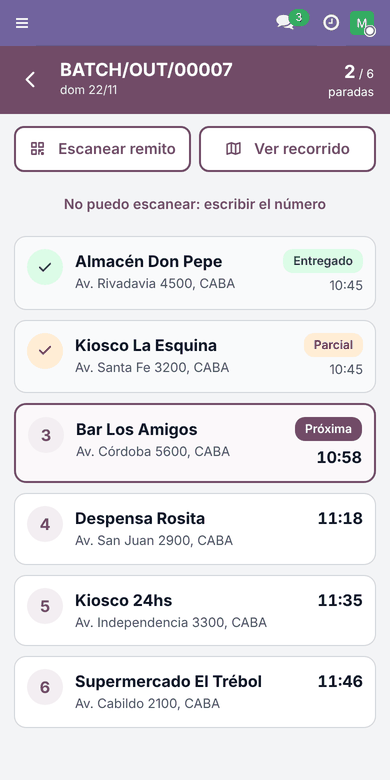
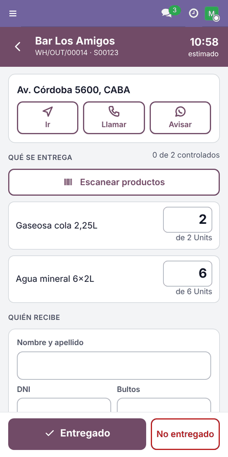
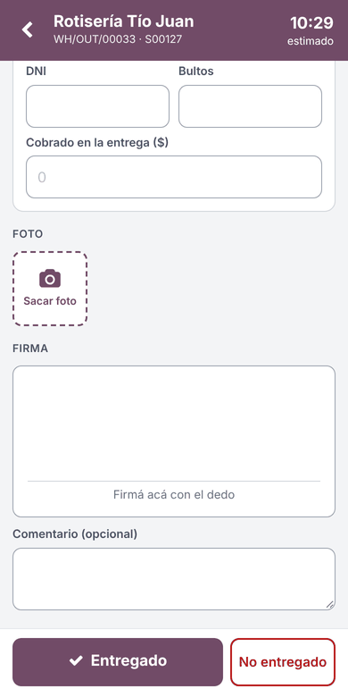
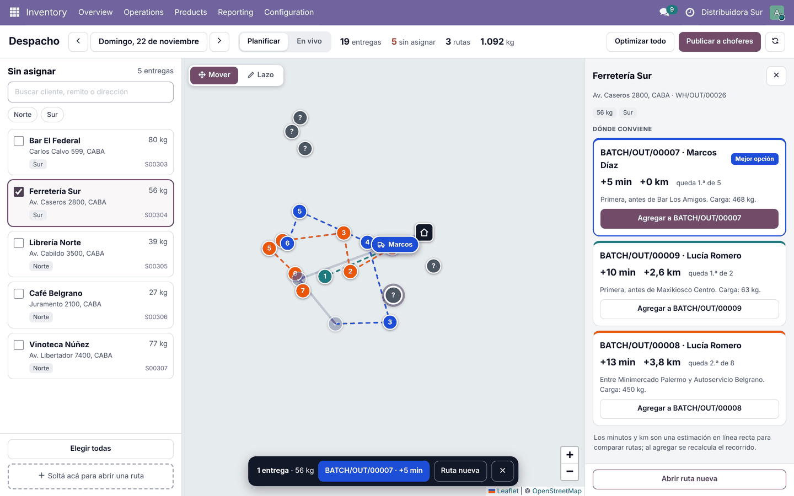
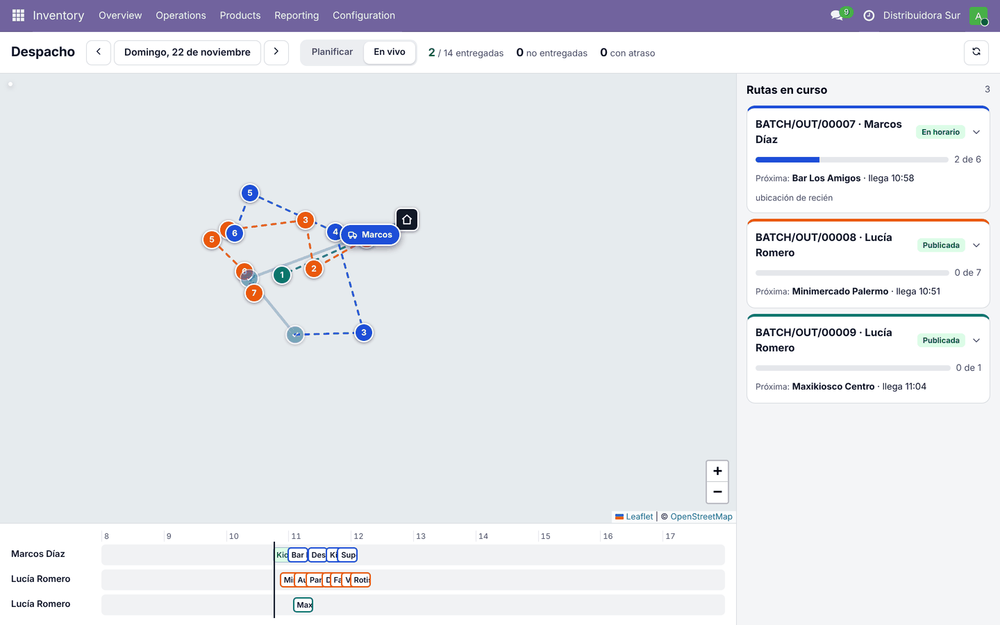
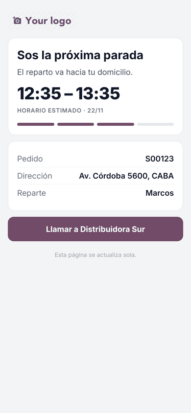

App del chofer
Se instala en el celular y sigue funcionando sin señal. Paradas en orden, navegación, llamada y WhatsApp a un toque.
Prueba de entrega
Quién recibe, DNI, bultos, cobro, fotos y firma. Entregas parciales y motivos de no entrega.
Escaneo
Abre la parada escaneando el remito y controla bultos y productos.
Seguimiento para el cliente
Link público con estado, horario estimado y paradas que faltan.
Avisos
Automáticos por correo, WhatsApp Business y SMS (Twilio, Vonage, Plivo, Telnyx, Infobip, ClickSend, Bird): salió, sos el próximo, entregado.
Tablero de despacho
Mapa, entregas sin asignar y rutas en una sola pantalla. Elegí con un lazo, mirá en qué ruta conviene cada entrega y arrastrá para reordenar.
Reportes
Entregas a tiempo, tarde y fallidas por motivo y por chofer. Km y tiempo planificados contra reales.

Paradas en orden con hora estimada

La parada: qué se entrega

Foto y firma de quien recibe

Planificar: dónde conviene cada entrega

En vivo: camiones, atrasos y línea de tiempo

Lo que ve el cliente